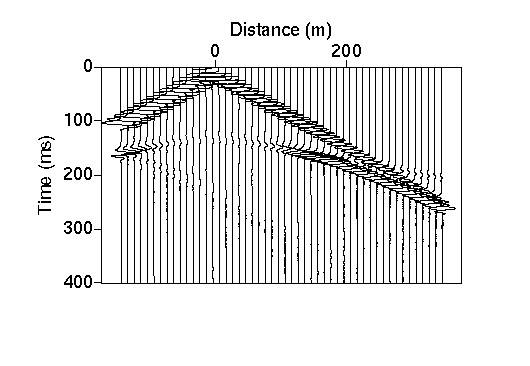

Interpretation: Reading First Arrivals
 As we have already described, we obtain records
of ground motion detected at each geophone over some time interval. The
relevant piece of information that we would like to extract from these records
is the time of arrival for the first arriving
seismic energy.
As we have already described, we obtain records
of ground motion detected at each geophone over some time interval. The
relevant piece of information that we would like to extract from these records
is the time of arrival for the first arriving
seismic energy.
One such record is shown to the right. A discussion on how first arrivals can be chosen has already been given. Suffice it to say that on this record it is fairly easy to see that the first arriving seismic energy comes in at the time corresponding to the blue line. The record shown, however, is noise free. With the inclusion of noise, the choice of time of the first arrival becomes much more complicated and, in truth, should be considered part of the interprational process.
With noisy data, it is often easier to choose first arrivals by comparing ground motion recorded at a variety of offsets. In the example shown below, for instance, it is much easier to distinguish the small refracted arrivals on the far offset traces when a group of these traces are plotted together in a record section.

Seismology
- Simple Earth Model: Low-Velocity Layer Over a Halfspacepg 11
- Head Wavespg 12
- Records of Ground Motionpg 13
- Travel-time Curves for a Simple Earth Modelpg 14
- First Arrivalspg 15
- Determining Earth Structure from Travel Timespg 16
- Derivation of Travel Time Equationspg 17
- High-Velocity Layer Over a Halfspace: Reprisepg 18
- Picking Times of Arrivalspg 25
- Wave Propagation with Multiple Horizontal Layerspg 26
- Travel Time Curves from Multiple Horizontalpg 27
- Hidden Layerspg 28
- Head Waves from a Dipping Layer: Shooting Down Dippg 29
- Head Waves from a Dipping Layer: Shooting Up Dippg 30
- A Field Procedure for Recognizing Dipping Bedspg 31
- Estimating Dips and Depths from Travelpg 32